Vamos con la tercera y última parte de los tops de los miembros del staff para «Lo mejor del 2013». Otra vez, nuevas listas, distintos gustos.
Como ya sabéis, en cada carátula podréis pinchar para dirigiros a una crítica más extensa del disco, siempre y cuando dispongamos de ella. Que las disfrutéis.
____________________________________________________
Tharandur
Top General 2013:
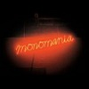 1. Deerhunter – Monomania
La banda que capitanea Bradford Cox nos ofreció este año su último disco, en el que otra vez demuestran saber como mantener su personalidad a pesar de sus continuos cambios estiĺísticos. Monomania es un trabajo en el que la banda abraza su versión más básica, en la que incluso se permite juguetear con el pop, dando como resultado un disco que no deja de ser una colección de temas totalmente memorables. Creo que el tiempo pondrá este Monomania como lo que es: un clásico instantáneo de una de las mejores bandas que nos ha dado el rock actual.
 2. Altar Of Plagues – Teethed Glory…
2. Altar Of Plagues – Teethed Glory…
Si estos años estamos sufriendo una segunda juventud del black metal no es por moda. Bueno, quizás un poco, pero la principal razón a mi parecer es una generación de grupos que han sabido llevar al género a nuevas fronteras sonoras a base de experimentar, pero sin olvidarse de sus profundas raíces. Altar of Plagues siempre ha sido una de las bandas más notorias de este movimiento, y en su último disco han llevado su sonido a su forma más perfecta, pariendo un trabajo extraño, oscuro y fascinante.
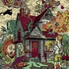 3. A Lot Like Birds – No Place
En No Place, A Lot Like Birds encuentran la fórmula perfecta entre la música cerebral y la emocional. Sin dejar de resultar épicos y emocionantes, han compuesto su álbum más complejo y ambicioso, un viaje que entre estructuras math nos llevan de la mano en un viaje que parece más una montaña rusa. Usando como base un género tan injustamente devaluado como el post-hardcore, ellos demuestran que aún se puede seguir haciendo cosas nuevas si se llevan al límite.
4. Celeste – Animale(s)
Reconozco que Celeste es una banda que siempre me ha gustado, pero me resultaba demasiado asfixiante su mezcla de sludge y black metal como para aguantar un disco entero. Es curioso que su primer disco doble haya sido por fin mi puerta de entrada a la banda. Animale(s) es un disco brutal, salvaje y con una clara querencia por las atmósferas enfermas y perturbadoras. Una malsana historia de amor sirve como hilo conductor para que la banda vomite su discurso sobre las bajezas del ser humano, que no podría estar mejor escenificado por la música de Celeste.
 5. Sigur Rós – Kveikur
5. Sigur Rós – Kveikur
Sigur Rós llevan ya unos años demostrando que es una banda que nunca puedes saber por donde van a salir. Tras encasillarse un tanto en Takk…, el festivo Með suð í eyrum við spilum endalaust marcó una especie de nueva era para la banda que parece preocupada en reflejar sus estados de ánimo mediante su música. Kveikur nos muestra la faceta más oscura y dura de la banda, dónde las señas de identidad de Sigur Rós se mantienen entre bases electrónicas que juguetean con el industrial y un trabajo en las percusiones maravilloso. Kveikur es la enésima muestra de que los islandeses son una de las bandas más personales e interesantes del panorama musical actual.
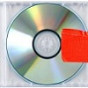 6. Kanye West – Yeezus
No podría faltar en la lista uno de los discos que más he escuchado este año. En Yeezus, Kanye West desata toda su megalomanía coronándose como el hijo de Dios (¿o como el mismo Dios?), dando como resultado un disco que aglutina una miríada de influencias, que camina entre lo pedante y lo irreverente. No es un disco perfecto, pero es tan fascinante que se le terminan perdonando sus pecados.
 7. Jungbluth – Part Ache
7. Jungbluth – Part Ache
Una de las sorpresas que nos han dejado este año. De las cenizas de Alpinist nacen estos Jungbluth, dispuestos a darnos una lección de antifascismo a base de screamo, crust y hardcore. Part Ache es un disco corto y directo, pero que cuenta con las justas florituras para no abrumar. A ver si estos alemanes se atreven con un disco algo más largo.
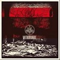 8. Woe – Withdrawal
Si mi yo adolescente, que se escuchaba auténticas mierdas black metaleras, hubiese escuchado este disco hoy, le molaría como para dar el coñazo en OcioJoven hasta la náusea. Una mezcla del black metal más accesible noventero y la vanguardia del género que sabe aunar como pocos nostalgia y decencia.
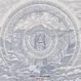 9. Year Of No Light – Tocsin
Year of No Light este año no han parado, estrenaron su interpretación de la película Vampyr y el trabajo que nos ocupa. Tocsin toma lo mejor de Ausserwelt (es decir, casi todo) y le da una pátina doom que nos hace recordar un poco a los primeros YONL entre atmósferas densas y oscuras. Una de las bandas metaleras más en forma del momento.
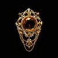 10. Fuck Buttons – Slow Focus
Fuck Buttons siguen haciendo mutar su noise para todos los públicos, esta vez tomando las estructuras menos definidas de Street Horrrsing pero con el sonido de Tarot Sport. ¿El resultado? Seguramente su disco más personal, trascendiendo de la pista de baile a lo místico, tejiendo capas de sonido para dejarnos algunos de los momentos más inspirados de este dúo. Fuck Buttons siguen confeccionando una discografía impecable y nos deja a todos con las ganas de saber dónde se encuentra su techo.
Top Nacional 2013:
 1. Fasenuova – Salsa De Cuervo
1. Fasenuova – Salsa De Cuervo
Salsa de Cuervo es sin duda el disco nacional que más me ha fascinado este año. Este dúo coge el legado y la crudeza de Esplendor Geométrico y lo adapta lo justo para ser digerible para nuestros oídos adecuados a sonidos más limpios. En gran parte por sus letras que evocan maravillosos paisajes surrealistas, Salsa de Cuervo ha sido el mejor regalo que hemos tenido los fans del industrial este 2013.
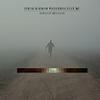 2. The Suicide Of Western Culture – …
Hope Only Bring Pain es la demostración de que los que nos dejamos entusiasmar por este dúo en su debut no nos confundíamos. Con un sonido más refinado, el disco fluye entre el desasosiego y lo bailable, dejándonos con cierto sentimiento de culpabilidad a la hora de menear la cabeza con temas con títulos como Spanish Republican Soldiers in French Retirement Homes.
 3. El Pardo – El Pardo
3. El Pardo – El Pardo
Uno de los debuts más sorprendentes y frescos de este año. Un pequeño trabajo de post punk antisistema que nos ha dejado para el recuerdo la salvaje La hoguera de San Jerónimo, la pieza de spoken word La Charla Final o la oscura y acertada Son los 90. El Pardo nos regalan la banda sonora perfecta para los que nos repugna el sistema actual en el que vivimos.
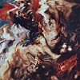 4. Triángulo De Amor Bizarro – Victoria…
Era difícil de superar su Año Santo (quizás el disco más importante en español de los últimos años), pero eso no hace que este Victoria Mística haya sido un tropezón para Triángulo de Amor Bizarro. A mí al menos me sigue haciendo vibrar su eterna ruidera, sus extrañas letras, sus obsesivas melodías y su caos controlado. Además que firman la canción de amor más retorcida y maravillosa que recuerde: Un Rayo de Sol.
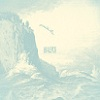 5. Allfits – Nada, Corre, Vuela
Allfits nos dejan para el recuerdo de este 2013 un precioso y emocionante trabajo de hardcore melódico con corazón post-rockero. Los recomendamos en Septiembre, y a título personal los vuelvo a recomendar como de lo mejor que nos ha dejado este 2013.
Menciones Especiales 2013:
Este año la cosa está reñida y estos grupos podrían formar otros tops igual de válidos para mí (sin ningún orden especial): Death Grips, Ólafur Arnalds, Touche Amore, Kveterlak, Rorcal, The Ocean, So Hideous, Gary Numan, Chelsea Wolfe, Cult of Luna, Rosetta, Norma Jean, Deafheaven, Data Romance, Inter Arma, Queens of Stone Age, Crash of Rhinos, The Devil Wears Prada, James Blake, Thee Oh Sees, Tim Hecker, Ash Borer y Tyler The Creator.
Sorpresas 2013:
Todo buen disco siempre es una sorpresa.
____________________________________________________
Jorgenious
Top General 2013:
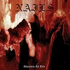 1. Nails – Abandon All Life
Ya lo he comentado por aquí alguna vez, llegan tiempos oscuros para el hardcore, y Nails portan una bandera negra y raída que avisa de la catástrofe. En poco más de 15 minutos han sabido concentrar podredumbre sonora a través de una velocidad e intensidades que rayan lo incómodo. Ayudándose del death metal más primitivo dejan constancia de que Abandon All Life es uno de los mejores discos extremos de los últimos años.
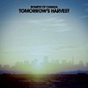 2. Boards Of Canada – Tomorrow’s…
Seguramente no le descubra nada a nadie hablando de las bondades de Boards Of Canada, uno de los pesos pesados de la electrónica ambiental actual. Los escoceses recogen ecos de diferentes décadas del pasado siglo para darles un enfoque que prácticamente vaticina la música del mañana entre la multitud de capas sonoras que conforman este Tomorrow’s Harvest. Un disco amplio y pausado que se cuela desde ya entre lo mejor de la carrera discográfica de la banda.
3. California X – California X
Los 90 molan, o eso parece, según la cantidad de referencias, en todos los ámbitos de la cultura, que ha tenido esa década durante este año. Más allá de modas, California X han publicado un combinado fresco de melodías poperas mirando directamente a grandes nombres como Dinosaur Jr., con un sonido pesado por momentos y que podría seguir la senda que marcó el genial Harmonicraft de Torche. El riff que da inicio a Sucker da buena cuenta de ello, pegadizo como él solo.
4. Chelsea Wolfe – Pain Is Beauty
El giro que ha tomado el sonido de Chelsea Wolfe hacia terrenos electrónicos no pareció convencer a mucha gente en el momento de la publicación de este Pain is Beauty, pero sin duda, esta adición de texturas no ha hecho más que dar riqueza a la anterior producción de la artista y ampliar el espectro de emociones que ya desataban sus descarnadas canciones. No se pierden esta cita la oscuridad ni la delicadeza, habituales de su discografía.
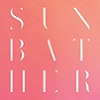 5. Deafheaven – Sunbather
Me ha tocado bailar con la más fea. El disco de metal que los medios generalistas incluyeron en sus tops por tener una portada bonita y relativamente transgresora. Polémicas con más o menos fundamenteo a parte, y centrándonos en lo musical, Deafheaven han continuado el camino que comenzaron con Roads to Judah, aportando luminosidad a un estilo que cada vez se aleja más del black metal ortodoxo (si alguna vez estuvo cerca) y se centra en jugar con dinámicas y atmósferas de forma más que correcta. Y bueno, los usé como mofa final en el vídeo del corpsepaint, les debía una.
6. Thee Oh Sees – Floating Coffins
Hace poco supimos del parón indefinido que van a realizar Thee Oh Sees, una de las bandas más activas de la psicodelia garagera reciente. Su último trabajo, Floating Coffins, está cargado de riffs extraños, teclados hipnóticos y susurros y gritos a dos voces. Todo ello, por supuesto, con la distorsión puesta al 11, rozando el stoner machacón por momentos, como en la genial Toe Cutter – Thum Buster y sin descuidar las melodías aparentemente inocentes.
7. Year Of No Light – Tocsin
Los franceses Year Of No Light parecen jugar en otra liga. No sólo han sido capaces de realizar uno de los discos más originales a nivel conceptual del año, la banda sonora alternativa de la película de 1932 Vampyr, si no que han vuelto a dar un portazo en la escena del metal más ambiental con Tocsin, una apuesta por la contundencia sonora que se alarga hasta el infinito tomando lo mejor de cada disco de la discografía del grupo.
 8. Ulcerate – Vermis
8. Ulcerate – Vermis
Ulcerate continúan ampliando la definición del término death metal con su último trabajo Vermis, una obra densa y compleja, en la que el continuo resonar del blast beat de la batería deja el cerebro licuado al más valiente. Parece que el experimento de mezclar el death metal técnico con las atmósferas de Neurosis sigue funcionando, y Ulcerate amplian horizontes a un estilo en constante evolución.
 9. The Dillinger Escape Plan – One Of…
9. The Dillinger Escape Plan – One Of…
La irracional fórmula que siguen todas las creaciones de The Dillinger Escape Plan parecía algo estancada, y aunque One of us is the Killer mantiene homogeneidad con la propuesta general de la banda, siguen sorprendiendo con sus frenéticas arritmias y disonancias, donde por supuesto también hay lugar para que Greg Puciato se luzca gritando como una bestia o cantando en su registro melódico más «Pattoniano», como en la pegadiza canción que da nombre al disco, One of Us Is the Killer.
10. Cristobal Tapia de Veer – Utopía
Este disco puede parecer fuera de lugar, vale, puede que esté haciendo trampa al incluir una banda sonora, pero si a principios de año la serie inglesa Utopia me voló la cabeza, fue en gran parte por sus enfermizas canciones, composiciones electrónicas ambientales que se incrustan en el subconsciente con un idm que en los aspectos vocales puede recordar a James Blake. Un gran trabajo del chileno Cristobal Tapia de Veer que puede ser disfrutado de igual forma sin necesidad de buscar a Jessica Hyde.
Top Nacional 2013:
1. Fasenuova – Salsa De Cuervo
No conocía a Fasenuova y este año han derribado todo lo que pensaba saber sobre música electrónica. Es fascinante lo fácil que parece hacer música de este tipo de los manos de los asturianos, reciclando los sonidos electrónicos patrios más primitivos y dándoles un aire renovado entre ritmos bailabes y letras evocadoras de fantasías enfermas. El mejor disco nacional del año de calle.
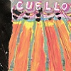 2. Cuello – Mi Brazo Que Te Sobre
El proyecto paralelo de José de Betunizer (puesto prácticamente compartido con su Gran Veta) viene rebosante de hardcore y rock sencillos y efectivos. La guitarra es protagonista absoluta de este disco, con unas melodías pegadizas al extremo que se complementan a la perfección con la voz del propio José, que transmite frescura desde la primera sílaba. Ideal para entrar en calor en este comienzo de año.
3. Triángulo De Amor Bizarro – Victoria…
La canción Robo tu Tiempo ya vale ella solita este puesto, pero más allá de esta machacona mirada al industrial, Triángulo de Amor Bizarro muestran otra vez más su bipolaridad musical que va del pop bailable y casi naïf al sonido que hace una lavadora cuando se suicida con un ladrillo en su interior. Otra vez más el trabajo en las voces y las letras es sobresaliente y uno de los puntos más fuertes de la banda gallega.
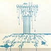 4. Charly Efe & DelaGang – Castillos…
Una de mis recomendaciones mensuales desde que escribo en SBS, aunque sea una compilación de temas antiguos, el mero hecho de haber sido tratados por el elegante filtro del jazz, swing… dan a las composiciones originales del rapero del realismo de rave una óptica distinta, acentuando las experiencias vividas de sus crudas letras. Uno de los trabajos que mezclan rap con banda más interesantes del hip hop nacional.
5. Estricalla – Triple Asalto Mortal
La última encarnación de Fernando Sapo me lo ha puesto realmente difícil a la hora de formar mi top estatal. Publicado hace apenas un mes, Triple Asalto Mortal es una avalancha de hardcore aceleradísimo, que llega a coquetear con sonidos más extremos, y que dispara a matar en letras cargadas de rabia y sentido del humor. Como colofón, la colaboración del gran Jello Biafra en el tema que cierra el disco, hablando de los auténticos terroristas.
Menciones Especiales 2013:
En general, y a mi parecer, 2013 ha resultado un año muy fructífero en lo que respecta a lo musical, especialmente en las propuestas hechas aquí. Para el top nacional he tenido más quebraderos de cabeza y es que me ha costado dejar en el tintero a trabajos tan interesantes como los de Fura, Totälickers, Betunizer, El Pardo, Allfits, Jadrin de la Croix, Yaw, Riot Propaganda, Guadalupe Plata o DePedro. En cuanto a las propuestas internacionales, mencionar a Fuck Buttons, Carcass, Rosetta, Inter Arma, Crash Of Rhinos, Tim Hecker, Dead in the Dirt, Oldskin, Man’s Gin, o el impresionante EP que se ha sacado Burial de la manga para terminar el año.
Sorpresas 2013:
Aunque sus discos de 2013 no han sido para mí tan relevantes como sus anteriores trabajos, recordaré este año sin duda por es aquel el que descubrí a The Knife y a Man’s Gin, dos de los grupos que más he machacado a lo largo de este año, por muy dispares que sean sus propuestas.
____________________________________________________
Nooneissafe
Top General 2013:
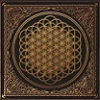 1. Bring Me The Horizon – Sempiternal
El cuarto larga duración de Bring Me The Horizon entró a principios de año, haciendo algo de ruido, con Shadow Moses. Un nuevo cambio en su estilo (el tercero ya) parecía acercarlo a los terrenos del metal más comercial. Y aunque si es cierto, que ahora son más accesibles, sus composiciones son mucho mas elaboradas y ricas en detalles, y a la vez completamente pegadizas, lo que hace que haya permanecido durante todo el año en mi reproductor. Hay que destacar tambien el cambio en la forma de cantar de Oli Sykes, que se adapta perfectamente al nuevo sonido del grupo. Lo que luego haga en directo, ya es otro tema. Obviamente, por todo lo dicho antes, a Sempiternal no le faltan detractores, sobretodo entre sus fans. Pero a mi (que con el There Is A Hell… me habían decepcionado), y a muchos otros, nos han ganado con este pedazo de álbum. THIS IS SEMPITERNAL!
2. Moderat – II
Lo primero que pensé tras escuchar Bad Kingdom fue: «Se han vuelto a calcar otro Rusty Nails«. Pero a diferencia de lo que sucedió con su debut, del cual me quedo más bien con eso, temas sueltos, a medida que iba avanzando en la escucha me iba quedando prendado de todo el álbum. Te van atrapando, y no en el mal sentido, tema tras tema: Versions, Let in The Light, Milk, …te arrastran directamente hasta el mismísimo Berlín. La sensación de teletransporte que me produce la escucha de este cd no la tiene ningún otro en esta lista, y el hecho de que la parte final del album sea algo más floja es lo único que hace que no esté un puesto más arriba.
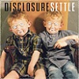 3. Disclosure – Settle
Y seguimos con electrónica, pero esta vez nos vamos de cabeza a la pista de baile. Settle se ha convertido para mi en ese cd que te pones antes de salir cada sábado por la noche para ir cogiendo impulso. Esta no es la mejor manera de venderlo, pero tampoco es lo que intento. Una dosis de buen rollo para «mover el esqueleto» con regusto noventero. Y punto.
 4. Like Moths To Flames – An Eye For…
4. Like Moths To Flames – An Eye For…
Es uno de los nuevos grupos de metalcore que más me ha llamado la atención en los últimos dos años. De entre estos, es casi el único que no se acerca hacia un sonido más prog/djent. Es difícil destacar cuando no inventas nada nuevo o no tienes influencias de otros estilos (aunque LMTF si tienen algo de posthardcore). Y aun así han conseguido hacerse un hueco entre mis favoritos actualmente. Quien haya escuchado When We Don’t Exist, se puede hacer una idea de lo que se encontrará en An Eye For An Eye, pues siguen la misma línea.
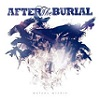 5. After The Burial – Wolves Within
Si hay algo que me encanta de After The Burial es esa dualidad de pesadez desnucadora y melodía frenética, aunque cada vez predomine más la primera. Son de los primeros grupos a los que les he oído usar guitarras de ocho cuerdas (ahora si no tocas con ocho cuerdas, no eres nadie) y hasta ahora solo han sabido sacar discazos en los que siempre desborda la calidad compositiva. Cuando no te dejan con la boca abierta con ensaladas de riffs como las de Disconnect, lo hacen con una burrada como A Wolf Amongst Ravens. Está entre lo que mas he escuchado este año y el cd ha salido hace poco mas de 3 semanas…ahí lo dejo.
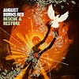 6. August Burns Red – Rescue & Restore
Es cierto que su estilo apenas ha evolucionado desde sus inicios, siempre fieles a su propio sonido de metalcore, pero August Burns Red siempre se las han arreglado para que sus discos en general siempre sean como mínimo de un notable alto, y el de este año no iba a ser una excepción. Sin darme cuenta Rescue & Restore se convirtió en ese cd al que siempre recurría cuando no sabía que escuchar.
7. Deafheaven – Sunbather
Parece que Sunbather ha causado bastante revuelo este año. Y no solo en el foro de Suicidebystar. Mi ignorancia respecto al estilo me han mantenido al margen del tema, y lo único que puedo decir es que ha sido el primer cd que me ha acercado al black metal. Seguramente las influencias de otros estilos lo hagan mas accesible para oídos no TRVES como los míos. Pero el caso es que me ha acabado encantando. Precioso de principio a fin.
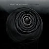 8. Heart Of A Coward – Severance
Han bajado un poco el nivel respecto de su debut, pero eso no significa que no hayan sacado un muy bien disco. Han dejado algo más aparcada su faceta melódica y eso les ha permitido sacar su lado mas brutal, que podemos apreciar sobretodo en temas como Deadweight o Psychophant. Aún así, se han dejado unas perlitas para el final.
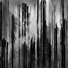 9. Cult Of Luna – Vertikal
A principios de año, cuando caía uno de los peores inviernos que recuerdo, Vertikal me seguía a todas partes. La fuerza de I: The Weapon, la densidad y oscuridad de Vicarious Redemption o la belleza de Passing Through, por poner algunos ejemplos, hacían de él una grata compañía. Ahora lo he vuelto a retomar, y es que en días como estos, generalmente se disfruta más de cualquier disco de post-metal, y quizás en mayor medida, de este Vertikal, gracias al ambiente en el que nos sumerge.
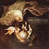 10. Killswitch Engage – Disarm The…
El último puesto siempre es algo dificil de decidir, porque implica dejar fuera a los demás. Con la vuelta de Jesse Leach, Killswitch Engage se han ganado estar en el top. Poco queda ya de los antiguos KSE: han cogido parte de la fórmula de Times Of Grace y se la han untado en grandes dosis. El resultado aún así, ha sido satisfactorio.
Top Nacional 2013:
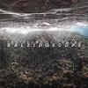 1. The Chaos Is Coming – Kaleidoscope
Como podeis ver este año no he escuchado casi ningún grupo nacional. Pero lo que he quemado el EP de estos chicos, equivale a lo que puedo haber escuchado otros años. La evolución es clara respecto a su primer EP, destacando unas composiciones más maduras, evitando el exceso de breakdowns y trabajando más las estructuras, un sonido mucho más pesado y la inclusión acertada de voces melódicas en momentos puntuales. Si bien The Chaos Is Coming tienen su propio sonido, es cierto que escuchándolos a veces se me vienen a la mente los buenos tiempos de The Eyes Of A Traitor, como destacaba Mcore. No hay duda de que si para algunos miembros de Suicidebystar, el disco nacional del año es el de Fasenuova, para el sector «core» Kaleidoscope esta al frente de la lista, y para mi en particular, un LP con este nivel tendría cabida perfectamente en mi top general.
Menciones Especiales 2013:
Aunque se me han quedado muchísimas cosas sin escuchar, este año para mi ha habido una gran cantidad de discos de los que esperaba algo, y que se han quedado en discos del montón, por ello no tengo un gran número de álbumes a destacar: dentro del metal, Born Of Osiris han conseguido por fin llamar mi atención y tanto Erra como Northlane como As They Burn, todos desconocidos para mí, se han llevado muchas escuchas este año. Por otro lado, el último de Bonobo me ha empezado encantando, pero no tenia ese «algo» que tenía el Black Sands y ha ido perdiendo poco a poco. Immunity de Jon Hopkins me ha sorprendido muchísimo hacia final de año con su electronica ambiental, pero creo que aun no lo he escuchado lo suficiente y no consideraba oportuno incluirlo en el top. Kings Of Leon se quedaron fuera de mi top en 2010, y este año les ha vuelto a pasar por poco. Su último trabajo se deja escuchar muy fácilmente, pero le faltan algunos grandes temas. Por último, destacar el de Modern Day Babylon, un disco de metal progresivo instrumental, en la línea de Periphery, que creo que hubiese entrado muy arriba en mi top si contasen con un cantante.
Sorpresas 2013:
Bring Me The Horizon, porque no me esperaba ese disco para nada, Disclosure y Deafheaven.
____________________________________________________
Primera entrega
Segunda entrega
Apoyános